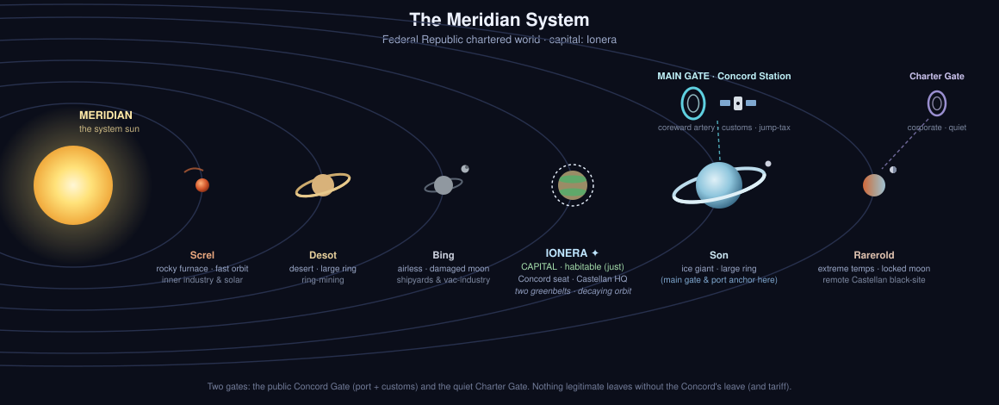

Overview
A wealthy, heavily-industrialized chartered corporate world in the Federal Republic’s inner reaches — and pointedly not one of its ranking powers. The Republic is tiered: the 9 Core Worlds (the founding powers) at the top; beneath them the 4 former rebel worlds — defeated in their war and folded into the core as a grudging second tier — and then everyone else. Meridian sits squarely among the everyone else: a chartered member, wealthy but junior, with no claim to either rank. It is new money: a frontier system developed under corporate charter a few generations back, and still governed by the very biotech houses that built it. Gleaming arcologies and vatworks sit atop a quiet, engineered underclass — and that contradiction is the whole story.
It is the deliberate inverse of Thides: central where Thides is a dead-end, rich where Thides is played-out, watched where Thides is unwatched. It is also where Six was grown — and where the people hunting him give their orders.
The System

Six worlds around the Meridian sun — an A-type main-sequence star, blue-white (mobRPG canon). Planets carry Tim’s numbered names; the draft names survive as local aliases for when planet-level naming gets developed. Inner → outer:
- Meridian I (Screl) — rocky furnace. The scorched innermost world on a very fast orbit; ringed with orbital solar collectors and robotic heavy industry that beam power and refined feedstock up the well.
- Meridian II (Desot) — desert world, large ring. Arid and water-poor; its big ring is industrially worked and the surface mined — an extraction-and-indenture world.
- Meridian III (Bing) — airless rock. No atmosphere, a damaged moon, and a faint ring; the system’s vacuum heavy industry, fabrication, and orbital shipyards.
- Meridian IV (Ionera) — the capital (large rocky, habitable… for now). Seat of the Meridian Concord, Castellan Biodynamics HQ, the arcology enclaves of the shareholding families, and the asset districts that run it all. Two greenbelt preserves straddle the 40° line — manicured green standing in for the lush flora the world used to have (or wants to be remembered for); Castellan’s Greenmarch foundries (where Six was grown) sit against the northern belt. And the capital’s orbit is slowly decaying — a doom no one with a charter seat cares to discuss.
- Meridian V (Son) — ice giant, large ring. The system’s outer giant; its ring and moons anchor the main gate and the system’s port (below), plus volatiles-skimming and the defensive picket.
- Meridian VI (Rarerold) — extreme-temperature rock. The far, hostile outer world with a tidally-locked moon — a remote Castellan black-site: hazard extraction, and where written-off assets and inconvenient things go to be forgotten.
Gates & traffic. Meridian is a connected inner hub, not a dead-end — it has two charted gates:
- The Concord Gate — the main artery, anchored among Meridian V’s moons: the heavily-taxed, heavily-watched coreward lane that carries all legitimate civilian and commercial traffic. Riding beside it is Concord Station, the system’s great orbital port — customs, jump-tax collection, drydocks, trade, and the public face of the Concord. Nothing legitimate leaves the system without passing through it (and paying).
- The Charter Gate — the quiet one, out in the dark past Meridian VI: Concord- and Castellan-controlled, nominally for corporate bulk freight — and the door through which the deniable asset trade and the Republic’s quiet purchases actually move. Less watched, because the watchers own it. (How Six was shipped out the first time; how a recovery cargo would come back.)
Government — the Meridian Concord
A chartered corporate plutocracy. Real power is a Board of Charter-Holders — the founding biotech houses, Castellan Biodynamics chief among them — who govern under the Federal development charter. Beneath the Board sits a nominal Citizens’ Assembly (dominated by corporate voting blocs) and the day-to-day Concord bureaucracy.
Society is a ladder:
- Charter-aristocracy — the shareholding dynasties; the ruling class. (Their bored, guilty children are who P.E.T.A. recruits.)
- Employee-citizens — the salaried managerial and technical class; “citizens” in the local, contractual sense.
- Indentures & assets — the workforce, including the vat-grown ‘asset’ underclass who are property, not persons.
Within the Federal Republic, Meridian self-governs like any member world (the Republic only demands that members obey federal law, pay the gate jump-tax, and hold federal licenses) — its self-governance just happens to be corporate. The old Core Worlds regard Meridian as gauche nouveau-riche; Meridian regards the Core as fossils living off legacy.
The Charter — how Castellan got its writ
The Republic wanted two things it didn’t want to be seen doing: to expand into new systems without spending federal blood and treasure, and to field bio-engineered labor and military assets while keeping the moral and legal mess at arm’s length. Its answer was the development charter — license a corporate consortium to settle and run a frontier system, supply the Republic with assets, keep the profits (minus jump-tax), and own the consequences.
The consortium chartered to develop Meridian included the founders of Castellan Biodynamics. From that, Castellan holds two intertwined writs:
- a seat on the Concord (a share of governing the world), and
- a Federal operating license for bio-engineering and asset production.
The asset trade flourishes because three things line up: Meridian’s local law is permissive (a corporate world with minimal personhood/labor protection for non-citizens), the Federal Republic classifies assets as property (its citizen → resident → property legal ladder; see Politics and Citizenship), and the Republic is a willing, quiet customer for the military and labor assets it officially keeps at a distance. Castellan grows them; the Republic buys them; nobody’s hands are dirty. (Six is one such “product” — a MACE-pattern boarding asset, escaped.)
Relationships
- Part of Federal Republic of Worlds — A wealthy junior member governed under a Federal development charter — among 'everyone else,' below both the 9 Core Worlds and the 4 ex-rebel second-tier worlds.